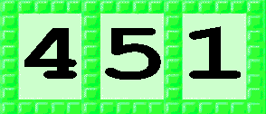

|
Números do ToonTalkDentro do Porta-Treco há uma pilha de grupos de números com um 1 neles. Se você colocar um número, por exemplo 2, em outro número, 7, eles serão somados por Bambam. Se você digitar a tecla para uma operação antes de colocar o 2, ocorrerá, então, o seguinte:
Você pode alterar um número enquanto o segura, ou aponta para ele, através do teclado. Você pode também colocar um número em uma agenda para ir para aquele número de página. Se você colocar um número num grupo de texto você alterará a primeira ou a última letra, dependendo de qual lado do grupo você o colocou. Se, por exemplo, você colocou 2 no lado direito do grupo de texto contendo "ABC", ele será alterado para "ABE". Apenas para usuários avançados: Números em branco. Um grupo de números em branco pode ser qualquer número. Eles são úteis no interior da mente de um robô. Desse forma, o robô só aceitará uma caixa com um número onde o número em branco estiver. Isso corresponde a "type test" (teste de digitação). Eles também podem ser utilizados para algo chamado "type conversion" (conversão de digitação).Você pode alterar um grupo de texto que exibe um número em outro número, colocando-o num grupo de texto vazio. Ou você pode apanhar uma caixa e colocá-la em um grupo de números vazios, e o grupo de números terminará exibindo quantas aberturas tem a caixa. Você pode também colocar uma equipe de robôs em um grupo de números vazio para descobrir quantos robôs existem. Você pode precisar utilizar Asper para remover o número de um grupo para deixá-lo em branco.
As operações seguintes em números, bem como em seqüências de bits, são suportadas, mas apenas os usuários avançados precisam se preocupar com elas.
|